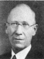
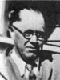
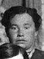
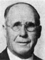
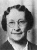

Archibald Waller Overton Buchanan Families
Home
Histories
Charts
Photos
Maps
Restricted
News
Info
Contact
|
John Buchanan and Nancy Ann Bach  |
--> |   |
Archibald Waller Overton Buchanan Born 9 FEB 1830 Lexington,Fayette,Kentucky,USA Died 7 MAY 1915 Venice,Sevier,Utah.USA Ane Marie Larsen Born 1 SEP 1851 Skopinge,Soro,Denmark Died 3 MAY 1901 Glenwood,Sevier,Utah,USA Married 11 OCT 1869 Salt Lake City,Salt Lake,Utah,USA Archibald Waller Overton also married Helen Amelia Whiting Archibald Waller Overton also married Mary Ann Brown Archibald Waller Overton also married Caroline Sophia Sorensen | |
 |
Osmond Buchanan Born 25 SEP 1871 Glenwood,Sevier,Utah,USA Died 13 MAR 1939 Blackfoot,Bingham,Idaho,USA Married Maria Elizabeth Killian 18 MAY 1898 MANTI,Sanpete,Utah,USA The 1st child of Archibald Waller Overton Buchanan and Ane Marie Larsen |
| * |
Arthur Adelbert Buchanan Born 28 JUL 1873 Glenwood,Sevier,Utah,USA Died 15 APR 1896 The 2nd child of Archibald Waller Overton Buchanan and Ane Marie Larsen |
  |
Castina Maria Buchanan Born 16 OCT 1876 Glenwood,Sevier,Utah,USA Died 8 AUG 1944 Married Newell Knight Young 13 JUL 1898 Glenwood,Sevier,Utah,USA The 3rd child of Archibald Waller Overton Buchanan and Ane Marie Larsen |
 |
James Carlos Buchanan Born 8 APR 1879 Glenwood,Sevier,Utah,USA Died 24 FEB 1954 Married Gail Johnson 14 OCT 1906 Provo,Utah,Utah,USA The 4th child of Archibald Waller OvertonBuchanan and Ane Marie Larsen |
 |
Ethelyn Buchanan Born 10 FEB 1883 Glenwood,Sevier,Utah,USA Died Married Mahonri William Breinholt 16 SEP 1904 Colonia Dublan,Chihuahua,Mexico The 5th child of Archibald Waller Overton Buchanan and Ane Marie Larsen |
  |
Nancy Edna Buchanan Born 22 JUL 1885 Glenwood,Sevier,Utah,USA Died 11 AUG 1967 Married Robert Chestnut Beecroft 18 OCT 1905 Colonia Pacheco,Chihuahua,Mexico The 6th child of Archibald Waller Overton Buchanan and Ane Marie Larsen |
|  | Jacob Joseph Smith Born 15 Dec. 1866 or 1867 Manti, Sanpete, Utah,USA Died 2 Mar. 1958 North Hollywood, CA Married Annie May Stratton 4 Dec. 1888 Glenwood, Sevier, Utah The adopted son of Archibald W. O. and Ann Marie Larsen |